Implemeting transform functions for peseudo-isometric camera in Unity
Published : Wed, 26 Nov 2025 Revision : Wed, 26 Nov 2025, v 1.1 Language : This content is in English.Introduction
In this tutorial, its intended to document and provide a method to implement trasform functions for pseudo-isometric camera or more recognized but informal description the ‘strategy-game’ camera, as you see on the example gif, mostly inspired by the amazing work of t3ssel8r.
Assuming you find yourself here as you wanted to create some isometric looking game, or something similar. We will implement a solution (maybe not the most efficient) for this problem. About the nomenclature, isometric camera describing the symmetrical, orttographic perspective to provide 3d visualization of technical drawings, as it is often used in strategy games due to large visual areal control property. However, although it is fairly easy to switch between orthographic and real perspective camera, we will focus on perspective camera to be able to have visuals with depth is more apparent, therefore I called it pseudo-isometric. I am not truly sure if it is so called in the literature.
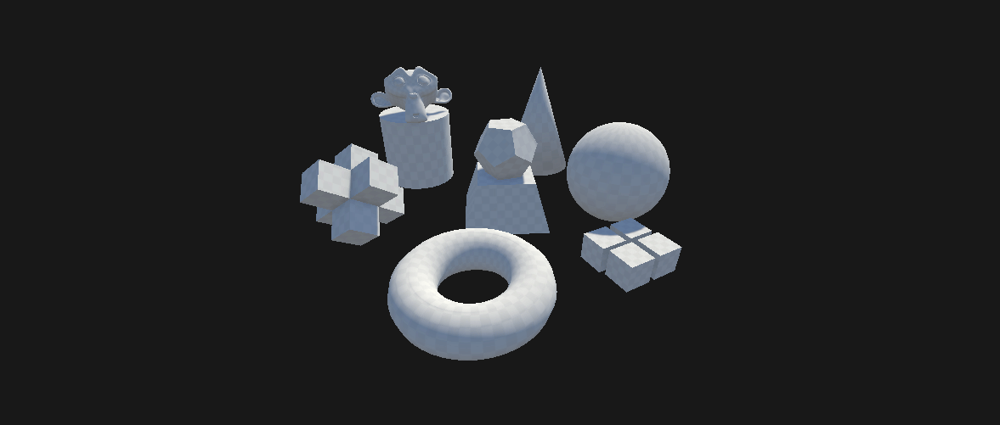
Pseudo-Isometric camera transformations
What we will do?
We will implement, movement, rotation and zoom functions of the camera that is ready to be implemented to your player, while explaining the math (slightly) behind it. As you comprehend the idea, you will be able to manipulate or tweak the parts depending on your needs.
To not lost in the directions, I would like to present name of the windows that I use in unity editor.
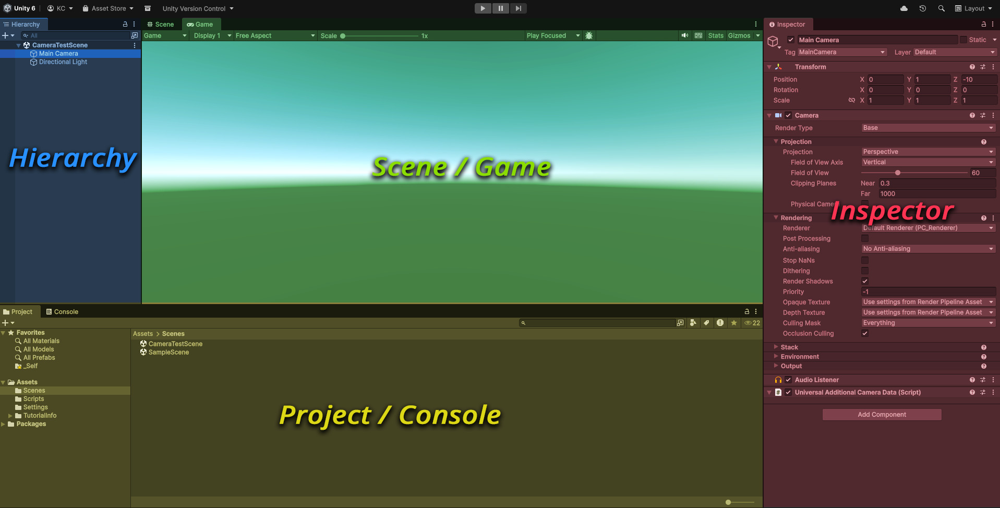
Orientation visual for Unity editor
1. Implementing planar movement
Okay we have a brand new unity project with empty scene looking to us. I usually like to create a new scene to test new implementations to protect my existing scenes. This tutorial uses my current LTS version of the editor, which is Unity 6000.0.61f1, with a writing date that is current with the latest LTS version.
Right click on project frame > scenes > create > scene > sceneWe create new scene, I name it CameraTestScene. In our scene, an empty camera, directional light and vast empty space is looking at us. Now we will create our minimal setup. First, we need an object to reference our movement (interestingly we cannot recognize our transformation if the space around us is uniform on all directions). So I add a cube to scene.
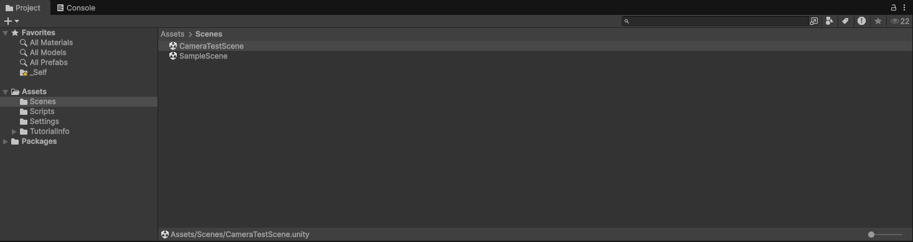
Creating scene
Right click on hierarchy > 3D Objects > CubeFor some reason, I have some weird transform on my cube, so I select the cube, then in Inspector window, we set position value of x y z axes to 0. Then the cube should be centered in my viewport.
Next, I select my Main Camera from the scene hierarchy window. The inspector window will update with the properties of camera. Here we want to position or camera to be able to see the box for some visual reference to test if our camera is working in the future. While we can see that, our camera and view direction in the scene. It is usually good idea to have some information about how to position, and how axes and rotations are defined in Unity, to have a better grasp how things positioned and rotated in 3d space in our imagination, as it will be very helpful while debugging if we encounter any problem.
1.1. Standards on 3D Space and perceptualization of Movement
In computer graphics world there are some things that there are consensus over, for instance setting each of the 3d axes, x, y, z perpendicular to each other is beneficial and intutive to everyone but not on all cases. However, which axis should represent the up is often depending on whether you conceptualize looking something on table or screen; or which directions should be positive are sometimes open thema for a debate. As there are no consensus on such things, at the same time we need a system for consistency, there are usually standards. These standards defined and used by various instituions, organizations and companies. In our case, unity is using ‘left handed coordinate system’ (will be referred as lhc next time in this text). But what does it mean?
If you close your left hand to to form a fist, then open first three fingers starting from your thumb, and lastly bend your middle finger 90 degrees front. Now your hand is representing a left handed coordinate system: whereas each of your open fingers, respectively thumb, index and middle representing respectively x, y, z are three perpendicular axis of 3d world. And direction of your fingers are also describing the positive directions of these axes. These axis also color coded with how computer calculates color with red green and blue values. So, since there are three axis and three colors, x is represented by red, y by green, and z by blue.

Simulating left hand coordinate system with your hand
But why this is useful? It is not always easy to imagine on 3d world especially when it comes to rotation calculations. This simple hand trick easily help you to revise and correct linear transformation operations moving things out of your memory with a visual cue. Thing of it as a analogy of a black board, it provides a playground to move things out of our memory and check things back if necessary. When we want to debug something, it allows us to calculate what to expect easily. We will use this in the tutorial.
Now we can check it by inspecting gizmo in our scene tool. Gizmo is a simple orientation tool for us to understand which direction we are currently looking at at space (remember that, it is not possible to understand we are looking at in uniform space). Gizmos three colored axed are representing positive directions, while the uncolored ones are representing the negative directions of same axes. (since the colored axes looks like arrows they also look like that they indicate directions which I found a little bit confusing). Now while your hand in left hand coordinate system formation, if you look your palm at half angle between your thumb and middle finger, you will see the same thing axis orientation with the unity gizmo. To provide some comparison, this wont work if you do it with your right hand. While both are industry standards and used by diffierent organizations and different rationales, lets not include this to keep us focused on our topic.
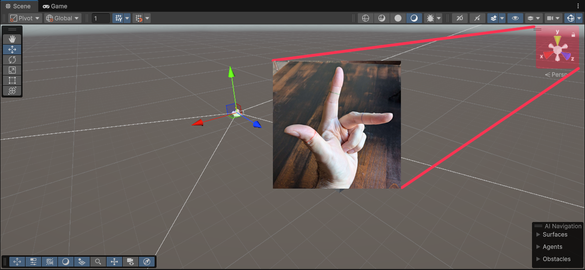
Gizmo / Axis comparison
While your hand is in lhc form, if you rotate your hand in a way, that your middle finger look same direction with your eyes, this is how unity camera is oriented. At this position we have oriented our eyes to unity camera. If you noticed that your eyes looking direction is now aligned with your middle finger, in other words, unity camera is looking z+ direction by default.
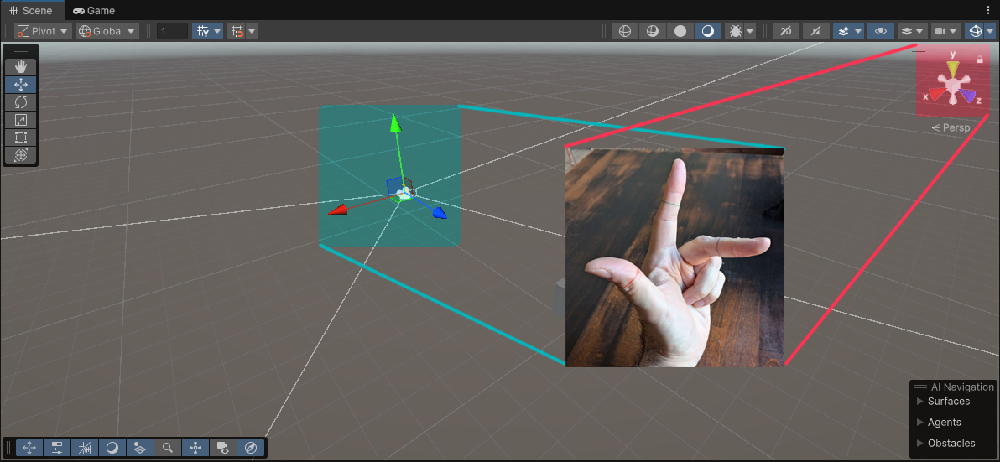
Camera / Hand Axis
If you select Main Camera in your scene in hierarchy. You can see that camera transform helpers will be visible. please notice that camera is looking towards blue axis, which is z+.
This information is important, because we will not always have such a beautiful visual referencse, we will have to either, debug and observe it by changing values, or comprehend and set in imagination factory.
So lets inspect our case, we have an object staying at (0, 0, 0) position. To simplify lets eliminate x and y axes and assume we are looking on a simple linear z axis. If we want to see this object, first condition is that object should be stay in front of our camera right? Since, our camera is looking +z direction, we should place our camera somewhere in -z so that it will see z=0 point (where our object stands) stays in +z axis of the camera.
1.2. Script component and Identification of camera
Enough theory for now, lets continue with the implementation. We were looking at Main Cameras properties by inspector window of unity. While it helps us to some extend, we need to define our own behaviors to gain more control over our camera. In order to do that we want to connect camera with c# script that we will define our behavior. On the bottom of inspector window click add component button, then select new script (you can search to find) then we name it PseudoIsometricCamera and create.
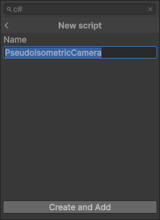
Creating script as component
We should be able to see our C# script in our asset window. When we double click it it will be open in our IDE. In my case it is visual studio.
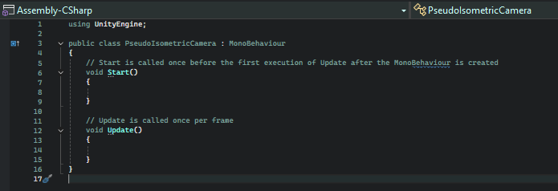
Monobehaviour script template
We see a minimal blueprint for MonoBehaviour c# script where we define our camera transformations. At script window, we can manipulate existing properties of camera by some rules, or define some new properties.
So lets provide some definitions, first we need to point our camera to our script so it recognizes it. In order to give some inputs and group those inputs on script on inspector we also add headers directly inside our PseudoIsometricCamera class.
public class PseudoIsometricCamera : MonoBehaviour
{
[Header("References")]
public Camera cam;
...After saving our script in our IDE, we should be able to see input in our Unity Editor under our script component. Lets drag and drop our main camera to this slot. So when we refer we use cam variable in our script, script will know that we are talking about the camera object named Main Camera in scene.
Then we can quicly test if we can control our camera through our script. At this state, if we press play. We should be able to see our box on the game window. As we nicely set poisitons for our camera and object to be able to see the cube within our frame.
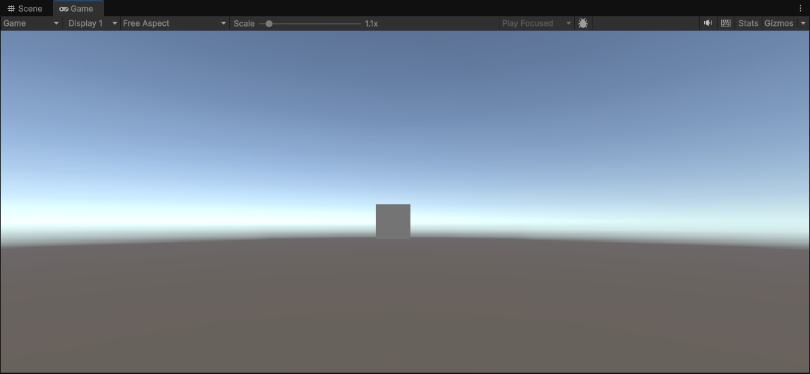
Game window: with cube
Lets change the position of our camera. We can use Start() function for it. As it states on the comment. Start script run once when the MonoBehaviour is created. A vector object, in unity could represent many things, such as point, direction, color etc. In our case it is representing a position as point each consequtive float number value is representing axes of the 3d space. Lets raise our from the gorund camera on y axis to give a bit height, while keeping our z value same. As isometric camera looks their scenes from above, it would make sense.
void Start()
{
cam.transform.position = new Vector3(0f, 6f, -10f);
}If you dont see slightly see box from above then everything is working as expected! So what we did: We introduced our camera object to our script, our camera object has transform property that holds position, rotation and scale values. Then we manipulated our position value within our script. How do we know and these properties exists? By simply reading unity docs as primary source.
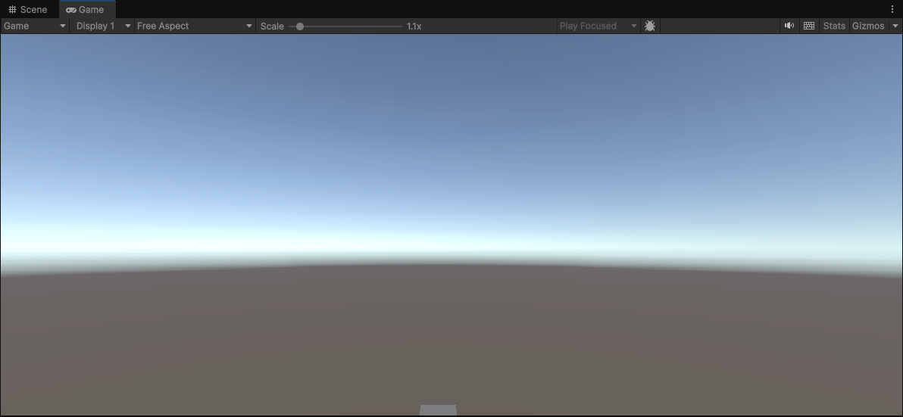
Game window: with cube looking above
Now we are looking our scene a bit above, we understand as seeing our boxes it is still in our frame slightly. Next, we want to at our object, We need to change our looking direction. or in other words rotate our camera.
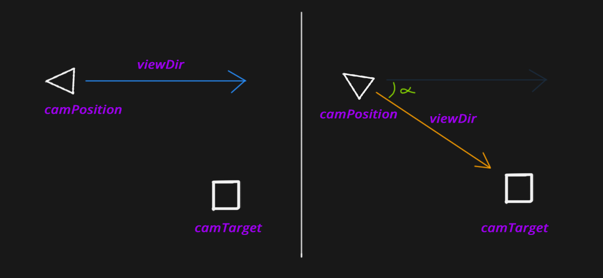
What it is / What we want in current state
Unity provides ease for us to use here with build in transform.lookAt(target) function of camera. This function simply aligns cameras, view direction to vector between target and camera position. By calculating the angle between camera look vector and the vector we want to align with, then including the up and right vectors its applying transformation.
Perhaps inner calculation of lookAt() function might be thema of another article for now lets use it pragmatically. If you want to read about it however, you can check these sources: 3d_projection_by_Jordan_Santell, unity_docs_transform.lookAt(), Camera_Chapter_in_learnopengl But for now lets implement similar but more explicit process. We introduce new parameters to our script.
public class PseudoIsometricCamera : MonoBehaviour
{
[Header("References")]
public Camera cam;
public Vector3 camTarget; // a position for our camera to look
public Vector3 camPosition; // the position of our camera (we will use it afterwards to snap to target such as player)
public Vector3 camDistance; // a vector represents distance and direction from camera to our target
private Vector3 baseCamDistance; // that we will use as a constant value
...We introduced
camTarget value to isolate our looking direction from any object so we can move independently from objects.
camDistance variable, this variable is actually derived variable as it is calculated camTarget - camPosition but for the sake of readability we created it.
camPosition this is also derived class same value within, cam.transform.posiiton but we create it for the sake of readability and use it as a snapping point afterwards.
Afterwards, we need to assign values to our introduced values. so in Start() function:
void Start()
{
// safeguard to check if everything nicely assigned
camTarget = Vector3.zero;
camPosition = new Vector3(0, 6, -10);
if (cam == null || camTarget == null || camPosition == null)
{
Debug.LogError("CameraRig setup incomplete! Assign all references.");
return;
}
// we set actual camera position based on our variable
cam.transform.position = camPosition;
// calculate the distance vector by using camera target and camera position
camDistance = camTarget - camPosition;
// set forward axis of camera to this vector but with normalizing it (scaling length to 1)
cam.transform.forward = camDistance.normalized;
}Now if we save our script and play. We should be able to see that our camera is nicely aligned in a way to focus on our target.
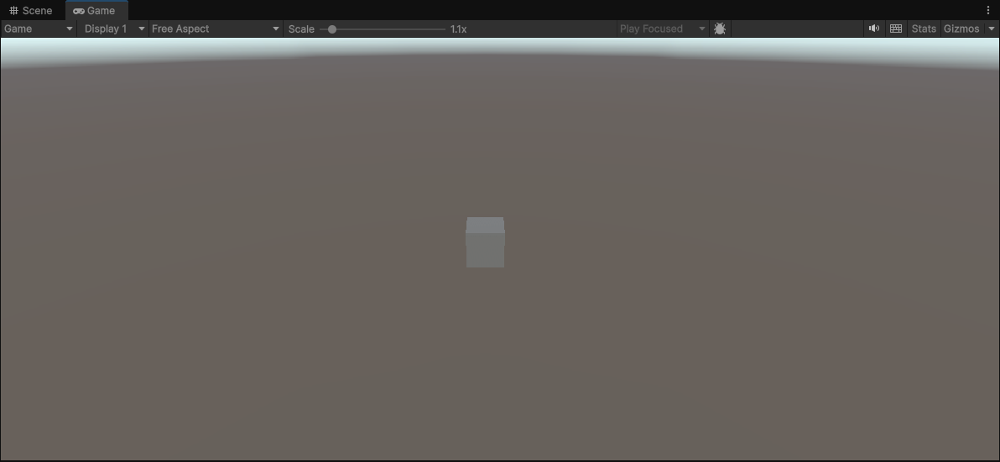
In game frame seeing the cube from above
1.3. Describing the behaviour of movement
At this stage, it might be good to implement our movement functions. For this lets define first what sort of movement we are interested at. First lets deconstruct, the movement action. We want user to give some inputs, through whatever input device they have (keyboard, mouse, touchpad, console, etc.) then based on this input type we make some calculations and apply them. In terms of architecture, it is usually considered as better idea to describe actions prior to input types rather than input types prior to actions. As it could be abstracted to adapt whatever input device afterwards.
For instance, in our code if we do our stuff when user pressses W on keyboard, we need to change our base code when we want to add support for game console. But if we rather define our movement actions and use it as an interface between our camera and input device, then we can add another adapter without changing our original code.
So we will start with defining our actions, as a simple base, we will define four direction movement: forward, backward, left and right. Unity offering a system for input managegement. We are going to use this.
First lets ensure that if input system is active: go to banner on top of your window. Open:
window > package manager > input system (search)Install it if it is not installed. Then again on the top section, select edit, then project settings, select player, search on top bar active input handling and select input system package (new)
Edit > project settings > player > active input handing (search) : input system package (new)Now we can add input actions object on our assets window :
Right click > create > input actionsI name it InputSystem. Now double click input system and open it. Input system action editor looks like this:
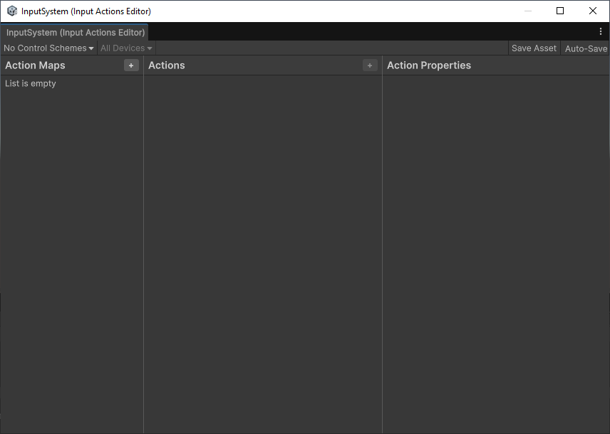
Input System, Action Maps Window
You may or may not find some default maps there. We will create new:
click to plus icon next to action maps > name it `CameraActionMap`Now on the middle window, create new action and name it Movement, now on the right window named Action Properties change action type to Value, control type: Vector 2. As four direction movement, defined upon two axis movement.
Once once again on middle window, right click on Movement action and upon selections, select Add Up/Down/Left/Right Composite as this is built-in already.
Unity system provided us a pattern for this input. Lets add input for each, Select Up on bindings > path: select W [Keyboard] for instance and apply the same for the rest respectively up/down/left/right to w,s,a,d keys, then save. At the end it should look like this:
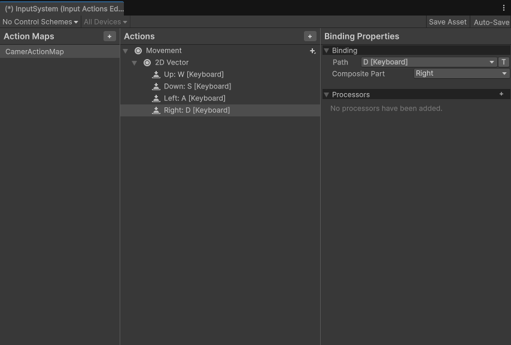
Input Actions Movement
Now we defined, movement action and up, down, left, right as sub actions and, which inputs will trigger those actions. However, we did not tell our camera to use this input action map, and what to do when this input is given. Now we are going to define those.
To organize a bit, I will move eveything inside start to new function called SetCameraParameters()
void Start()
{
SetCameraParameters();
}
void SetCameraParameters()
{
// safeguard to check if everything nicely assigned
camTarget = Vector3.zero;
camPosition = new Vector3(0, 6, -10);
if (cam == null || camTarget == null || camPosition == null)
{
Debug.LogError("CameraRig setup incomplete! Assign all references.");
return;
}
cam.transform.position = camPosition; // we set actual camera position based on our variable
camDistance = camTarget - camPosition;
cam.transform.forward = camDistance.normalized;
}And lets introduce new set of variables for our InputAction object:
// we introduce our script that we are going to use InputSystem package
using UnityEngine.InputSystem;
...
...
// we define our variables one for action map and other for action
public InputActionAsset inputAction; // -> we need to drag drop our InputSystem object to camera script
private InputAction moveInputAction;
...
void Start()
{
SetCameraParameters();
// we add the function call in start that we set input actions
SetInputActions();
}
...
// we add the function where we define input functions
public void SetInputActions()
{
var cameraMap = inputAction.FindActionMap("CameraActionMap", true);
moveInputAction = cameraMap.FindAction("Movement", true);
moveInputAction.Enable();
}
...At this stage, our camera script is recognized our input map. Please do not forget to drag and drop InputSystem object to your camera script.
Now lets test it if input is working. We are going to use Update() function of our Monobehaviour script, as it is called every frame.
...
...
void Update()
{
// if there is no movement action do nothing
if (moveInputAction == null) return;
// read the movement vector something like this (1f, 0f)
Vector2 moveInput = moveInputAction.ReadValue<Vector2>();
Debug.Log(moveInput);
}
...
What are we doing here? We are running the moveInputAction value on every frame and writing on the console. If we press play, then inspect the console window below we should be able to see (0,0) initial input. Now, if we press our recognized keys such as W, A, S or D we expect these vector values to change!
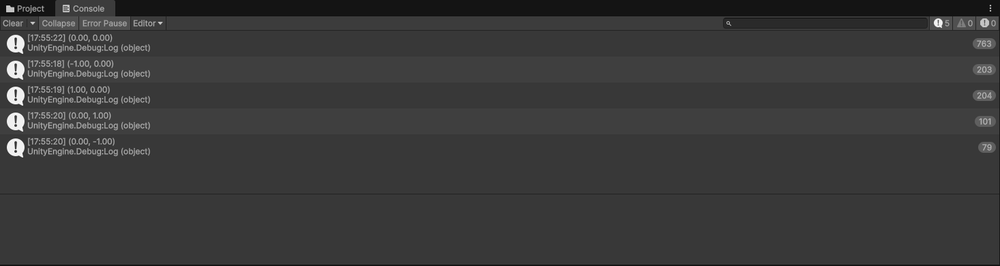
Testing input through console
We ensured that, our input map is recognized by script and in fact working. Now lastly we need to descibe what sort of behaviour we want on these inputs. Now its good time to talk about, what sort of movement we are interested in. For intance, on by up or forward what do we actually mean?
For instance do we want to move camera to go up or in unity terms (+y) axis? No. Do we want camera to go towards view direction? No.
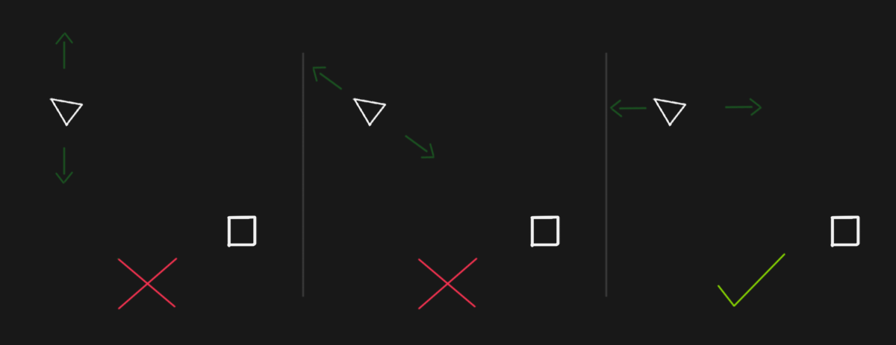
Which type of movement we are interested in
As also indicated in the visual we are interested with planar camera movement. For this, we are using 2d vector coming from our input. However in our 3d world we need to adjust axes accordingly. Please notice that on our simple move function we are not changing our y axis at all.
...
void Update()
{
// if there is no movement action do nothing
if (moveInputAction == null) return;
// read the movement vector something like this (1f, 0f)
Vector2 moveInput = moveInputAction.ReadValue<Vector2>();
// safeguard
if (moveInput.magnitude < 0.02f) return;
Vector3 moveDir = new Vector3(moveInput.x, 0.0f, moveInput.y);
camTarget += moveDir * Time.deltaTime;
camPosition += moveDir * Time.deltaTime;
cam.transform.position = camPosition;
Debug.Log(moveInput);
}
}So we update our update function. First, we are adding a safeguard to prevent unnecesary calculations. By checking the size of input vector. Then we are transribing our 2d vector to 3d by passing y axis 0, to ensure planar movement. Then lastly, we updte our camera target and camera position variables.
So we have basic movement. However this movement is a bit slow or might be fast for your taste. In order to control and modify in the future we are introducing new variable in our code, as simple multiplier for movement speed.
...
[Header("Movement Settings")]
private float baseSpeed = 5.0f;
...
void Update()
{
// if there is no movement action do nothing
if (moveInputAction == null) return;
// read the movement vector something like this (1f, 0f)
Vector2 moveInput = moveInputAction.ReadValue<Vector2>();
// safeguard
if (moveInput.magnitude < 0.02f) return;
Vector3 moveVector = new Vector3(moveInput.x, 0.0f, moveInput.y) * baseSpeed * Time.deltaTime;
camTarget += moveVector;
camPosition += moveVector;
cam.transform.position = camPosition;
}We also changed our movedir to movevector to prevent double calcultion below. Another thing to mention we are not normalizing our moveVector as it is already coming as normalized.
Planar movement
On the next step we will be adding rotation but before that lets do a bit organization.
Everything inside update is related to move, when we add rotation or room this could easily become a mess. We want to separate discrete step as much as possible. So lets group all of these inside new function called HandleMovement() and lastly we call this new function inside Update()
...
void Update()
{
HandleMovement();
}
...
HandleMovement()
{
if (moveInputAction == null) return;
// read the movement vector something like this (1f, 0f)
Vector2 moveInput = moveInputAction.ReadValue<Vector2>();
// safeguard
if (moveInput.magnitude < 0.02f) return;
Vector3 moveVector = new Vector3(moveInput.x, 0.0f, moveInput.y) * baseSpeed * Time.deltaTime;
camTarget += moveVector;
camPosition += moveVector;
cam.transform.position = camPosition;
}
...2. Impliementing quantized-step rotation
Next, we can focus on rotation. Like previously, we also need to define an input map for rotation action, but this time, so we open once again our InputSystem and in the middle window we add new Action called Rotate but this time unlike the Movement, we do not need to define Vector2D because we only have a linear, or even boolean value. Rotation could either be positive or negative, clockwise (cw), or counterclockwise (ccw). So we define, so we click + button next to action and select add positive/negative binding This will add under action 1D Axis For some reason I also need to remove no binding element above and add keys for it. I usually select Q and E for positive and negative rotation keys, but you are ofcourse free to select your own. So at last it looks something like this:
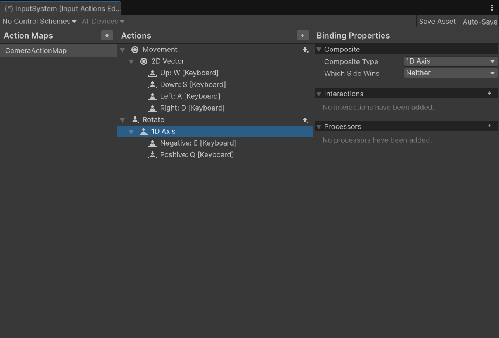
Input Map: Rotation
2.1. Finding the positive rotation
Maybe it is also good point to talk once again about standards, at rotation, we encounter once again the choose between standards. Which is positive direction according to you clockwise or counterclockwise?
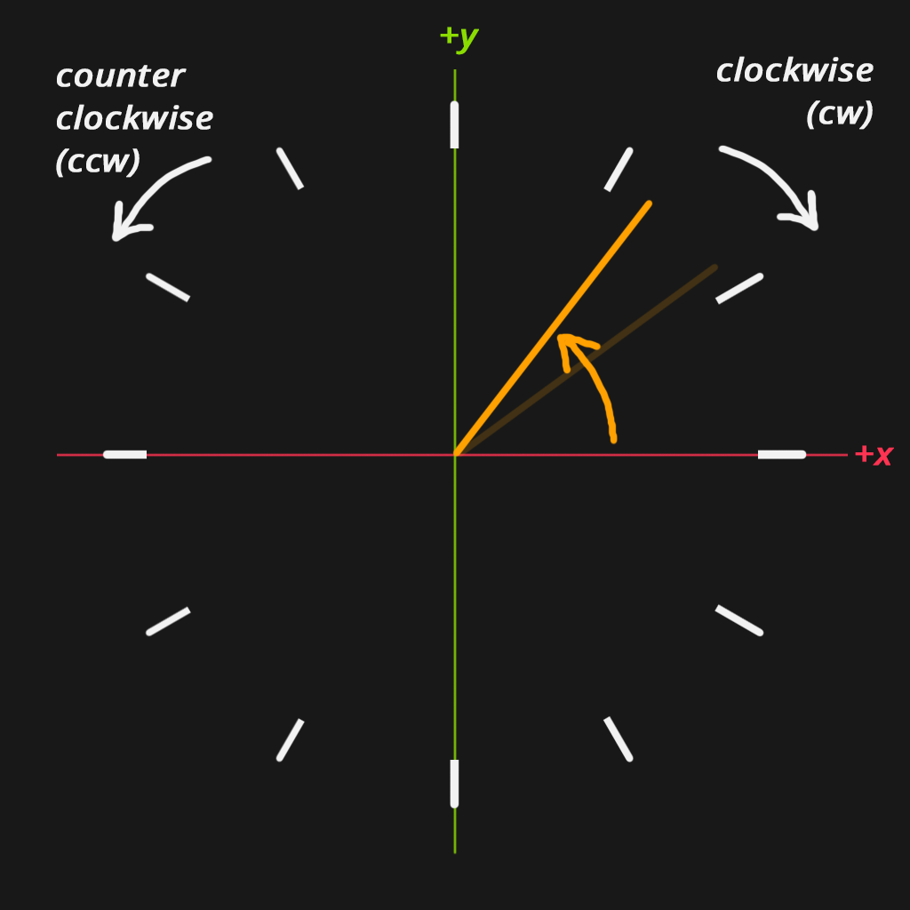
Rotation naming and Unity standard
When we mention about the clocks you might have been thinking intiutively, clockwise (cw) rotation should be positive. However, in mathemtics, general convention uses the counterclockwise (ccw) rotation, as right and up axes considered positive on 2d space, positive rotation on a plane is counterclockwise. Again, there are no direct truth but preferences as standards. Unity also accepts this from the perspective of mathematics. So we will regard, ccw as positive axis. when you are looking front it might be trivial to think of positive rotation (in this context we are considering rotating our xy plane on z+ axis). however, when we start to talk about other axis or even,vectors this line of clear comprehension starts to blur very fast. For instance, what is the positive rotation for y axis? Or what is the positive rotation of Vector (1, 3, 2). Once again our precious hands come to our help to provide real time simulation on our case.
I like to visualize it this way: while your left hand is on lhc formation, open your fingers in your right hand, and bend your fingers except your thumb slightly as if you are about to hold something. Now considering, your thumb is representing the negative of the axis that you want to check, your fingers are pointing the positive rotation axis. On this position if you touch your right hand thumb to the tip of any of axis represented by in your left hand end to end, and rotate your right hand around your pinned thumb, you will see the positive direction of given axis. Returning to our task, as it may seem trivial for the moment but it will be necessary for more complex calculations in the future: keys Q and E are corresponding to left and right, respecitively ccw and cw. So Q is positive while E represent negative in our case.
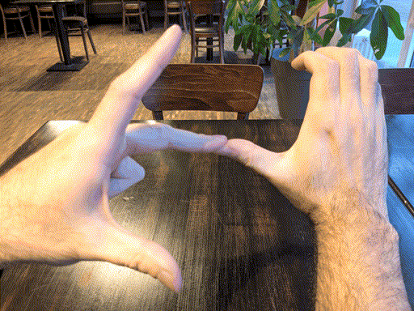
Hand movement simulation on rotation
2.1. Implementing pattern
Next, as you may have guessed we will add our rotateInputAction variable HandleRotation() and some intermediatery variables which we will define soon. But first, lets talk about what sort of rotation we want, as we previously discussed for, well there might be different design choices at this point but I will go with instead of continiously incrasing, a step rotation on predefined angle such as 30 degree. Okay, lets dive little bit more,lets ask some questions, when we rotate 30 degree:
- Where is the pivot (origin) of rotation?
camTarget - Does the distance or angle between our camera and target is changing? No.
- Does the camera target position is changing? No.
- Does the camera point is changing? Yes.
- Does the plane of movement is changing? No.
Upon those questions, maybe we can clear some fog to visualize better this rotation in or minds. We will rotate around cameraTarget, neither distance nor angle between camera and target will change. But the position of camera.
So we will rotate our cameraDirection vector 30 degree from starting point. and at the end, we will have our new camera position. Then we are going to use this position to look at camTarget. Lets implement this idea.
...
[Header("Rotation Settings")]
public float rotateStepDeg = 30.0f;
private float currentUpRotationInDeg = 0.0f;
private float targetUpRotationInDeg = 0.0f;
...
private InputAction rotateInputAction;
...
void Update()
{
HandleRotate();
HandleMovement();
}
...
public void SetInputActions()
{
var cameraMap = inputAction.FindActionMap("InputMapCam", true);
moveInputAction = cameraMap.FindAction("Movement", true);
moveInputAction.Enable();
rotateInputAction = cameraMap.FindAction("Rotate", true);
rotateInputAction.Enable();
}
...
void HandleRotate() {}
...On the preparation of our base, we define our rotation step degree, current and target rotation (it is also possible to keep it under one variable but we will use it afterwards). And our rotate input action, we new function we we will define what will happen on input is given, and lastly we introduce our script to recognize our input actions.
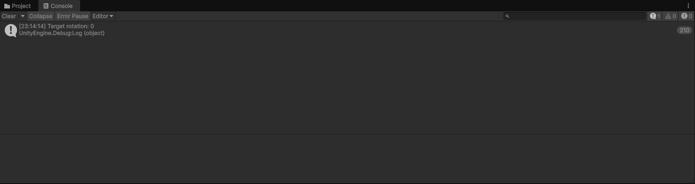
Testing rotation inputs
Lets continue with the logic.
...
void HandleRotate()
{
// safeguard
if (rotateInputAction == null) return;
// this step is to ensure our rotatation runs once per key press
// and not while key hold
if (rotateInputAction.WasPressedThisFrame())
{
targetUpRotationInDeg += rotationInDeg;
// we read the sign of 1D axis by action
float rotateAxisSign = -rotateInputAction.ReadValue<float>();
// we multiply sign and predefined rotation step degree
// to have direction and magnitude of our rotation
float rotationInDeg = rotateStepDeg * rotateAxisSign;
// finally we set it to achieve our targeted rotation degree
targetUpRotationInDeg = rotationInDeg;
Debug.Log("Target rotation: " + targetUpRotationInDeg );
}
}
...When we press play and inspect the console while pressing games on game window, we should be able to see our registered target rotations. Now lets extend this to be able to see actual rotation.
...
void HandleRotate()
{
...
if (rotateInputAction.WasPressedThisFrame())
{
...
Debug.Log("Target rotation: " + targetUpRotationInDeg );
// quaternion is fancy 4d number system to avoid 3d math rotation problem called gimbal lock
// try to ignore it this syntax but accept it as we want to rotate on y (up) axis with given degree
Quaternion rotation = Quaternion.Euler(0, targetUpRotationInDeg , 0);
// we calculate new vector for our camera Forward
Vector3 rotatedOffset = rotation * camDistance;
// by using our new camera forward we calculate our new camera position
camPosition = camTarget - rotatedOffset;
cam.transform.position = camPosition;
// finally we look at our traget once again
camDistance = camTarget - camPosition;
cam.transform.forward = camDistance;
}
}
...
Quantized rotation input
2.3. Fixing the movement logic
Well, we could have been done the correct from the beggining. However, I wanted this tutorial to simulate, a little bit more, real development process. If you used movement after rotation. You will probably encounter something unexpected on movement. While, it was working alone on initial movement, when we combine with rotate, the movement is not following the direction we are looking at. Often, while developing something we increase complexity gradually, and sometimes simple cases does not correspond to complex situations. Maybe you already named the problem but, the problem is we are always changing our positions in world space during movement. This is resulting unintuitive movement behaviour. How to fix this?
Problemamtic movement after rotation
private void HandleMovement()
{
if (moveInputAction == null) return;
// read the movement vector something like this (1f, 0f)
Vector2 moveInput = moveInputAction.ReadValue<Vector2>();
// safeguard
if (moveInput.magnitude < 0.02f) return;
// move relative to camera rotation on XZ plane
Vector3 forward = cam.transform.forward;
Vector3 right = cam.transform.right;
// ignore vertical component (important for isometric)
forward.y = 0;
right.y = 0;
forward.Normalize();
right.Normalize();
// we set adjust world space to camera orientation
Vector3 moveVector = (right * moveInput.x + forward * moveInput.y)
* baseSpeed * Time.deltaTime;
camTarget += moveVector;
camPosition += moveVector;
cam.transform.position = camPosition;
}So we changed our handleMovement() function, instead of setting vector values to x, and z, on world space. We use it these values to scale camera orientation values.
The final result should something like this:
Problemamtic movement after rotation
2.4. Rotation animation through linear interpolation
Now we have or rotation, but it looks kind a boring. Because there is no grace in the transition, as it jumps directly from one view to another (although it might be preferable depending on the art style sometimes). Would it not be nice, if we hade some kind of smooth transition between those two views? So lets do that.
Let me introduce you linear interpolation functions. I will approach this fancy but also scary looking concept from artists perpesctive rather than mathematician at this point for the sake of tutorial. In pragmatic terms, linear interpolation allows us to create smoooth transitions between two states. or numbers, it is often used in animation. So idea is instead of hard switching from one view to another, we define a time frame, initial and target value to switch within this time frame. There are many forms of interpolation once again depending on the artistic choices and charactistics. Sometimes it improves the movement and realism drastically. Sometimes, it wents beyond the tagret value and returns to characterize momentum and inertia. If you want to deep dive into topic, and see what could be achievable through this process I would recommend this video. But we will keep things simple and precise here. So one of the simple and widely used linear transformation function (shortened by lerp) is this.
While a and b representing, init and end value, t is the time frame this value is about too occurs. What this function is simply linearly mapping in between values between start and end points on defined time frame.
So by using build-in lerp function we will extend our rotation movement to add some smooth transition. In order to do this, we need to have two variables to describe start and end values. Which we will define as currentUpRotationInDeg and targetUpRotationInDeg , and rotationLerpSpeed parameter time frame and transition speed.
...
public float rotationLerpSpeed = 10.0f;
...
void HandleRotation()
{
// safeguard
if (rotateInputAction == null) return;
// this step is to ensure our rotatation runs once per key press
// and not while key hold
if (rotateInputAction.WasPressedThisFrame())
{
// we read the sign of 1D axis by action
float rotateAxisSign = -rotateInputAction.ReadValue<float>();
// we multiply sign and predefined rotation step degree
// to have direction and magnitude of our rotation
float rotationInDeg = rotateStepDeg * rotateAxisSign;
// finally we set it to achieve our targeted rotation degree
// !! We change to add up target rotation instead of direct assign
targetUpRotationInDeg += rotationInDeg;
}
// we introduce lerp based on upper definition
currentUpRotationInDeg = Mathf.LerpAngle(currentUpRotationInDeg, targetUpRotationInDeg , rotationLerpSpeed * Time.deltaTime);
if (currentUpRotationInDeg == targetUpRotationInDeg ) return;
Quaternion rotation = Quaternion.Euler(0, currentUpRotationInDeg, 0);
// we calculate new vector for our camera Forward
Vector3 rotatedOffset = rotation * camDistance;
Debug.Log(camDistance);
// by using our new camera forward we calculate our new camera position
camPosition = camTarget - rotatedOffset;
cam.transform.position = camPosition;
cam.transform.LookAt(camTarget);
}
...With this final form of our HandleRotation() function we should be ready to test our rotation. Please notice that in this case, our camDistance is staying constant as we calculate the new position by only one changing parameter which is angle. Another thing is we are looking build in lookAt() function to point.
Lerp applied quantized step rotation
I believe we can conclude the rotation at this point, by summarizing conceptualization of rotation, defining the axis and type of movement, implementation of rotation and lerp functions. If you want to extend your work with little bit personalization and better grasp over concept. You can check out some other lerp functions and implements some characteristics over your step rotation, or simply remove step change to continious rotation. I would highly recommend using graphtoy by awesome Inigo Quilez If you want to write or test your own lerp functions.
2.5. Combining movements with new camera update function
As a conclution of our subchapter, its good idea to do some code reviewing. Notice that, we are updating camera position on both, rotation and movement, so we have some repetitive work that we can avoid, it is especially not optimal for a function that is called every frame. Considering that we might change the same values on the zoom, that might result in some inefficiency or even some bugs. So in such cases, one of the options are introducing a new function that is holding the common calculation by these functions. So we introduce, UpdateCamera() function to avoid repetitive code. But there are some tricky points. We want to move and update camera position in UpdateCamera() function. However, the update values are private to HandleMovement() such as movement vector. So lets make them class variables and just update these variables in HandleMovement(). But before collecting common features in UpdateCamera() we need to expose some local variables in functions so we can use them in another class function.
[Header("Movement Settings")]
...
// #1 we introduce our moveVector as class property
private Vector3 planarMoveVector;
...
[Header("Rotation Settings")]
...
// #2 we expose previously rotation quaternion as class property
private Quaternion currentRotationQuaternion;
...
void HandleMovement()
{
// #3 we remove moveVector and update planarMoveVector insdie handle movement.
// we set adjust world space to camera orientation
//Vector3 moveVector = (right * moveInput.x + forward * moveInput.y)
//* baseSpeed * Time.deltaTime;
planarMoveVector = (right * moveInput.x + forward * moveInput.y)
* baseSpeed * Time.deltaTime;
// #4 delete the rest of the function as this part will be in UpdateCamera()
}
void HandleRotation()
{
...
if (Mathf.Abs(currentUpRotationInDeg - targetUpRotationInDeg) < 0.05f)
{
currentUpRotationInDeg = targetUpRotationInDeg;
return;
}
// #5 delete the rest of the function as this part will be in UpdateCamera()
}
...Now we can create the actual UpdateCamera(). As pretty trivial task, as a step for optimization instead of calculating on every frame, we calculate only if there is given input: We check if there is rotation, we check if there is movement, both of these transformations apply on camera position so finally we check out camera position is different than our variable cameraPosition which indicates that a transform exists.
...
private void UpdateCamera()
{
// change camera variables if there is rotation
if (currentUpRotationInDeg != targetUpRotationInDeg)
{
currentRotationQuaternion = Quaternion.Euler(0, currentUpRotationInDeg, 0);
Vector3 rotatedOffset = currentRotationQuaternion * baseCamDistance;
camPosition = camTarget - rotatedOffset;
camDistance = camTarget - camPosition;
}
// change camera variable if there is movement
if (planarMoveVector.magnitude > 0.02f)
{
camTarget += planarMoveVector;
camPosition += planarMoveVector;
planarMoveVector = Vector3.zero;
}
// apply changes if there is change in camera position
if (cam.transform.position != camPosition)
{
camDistance = camTarget - camPosition;
cam.transform.position = camPosition;
cam.transform.position = camPosition;
cam.transform.LookAt(camTarget);
}
}I believe we are good to go with our last and final transform function.
3. Implementing quantized-step zoom
As a final step of transform functions, we will implement zooming option. In this section, we will neither learn or implement something new, but rather practice and repeat what we have already did so far. So at this point, I highly recommend try to implement zoom function by yourself, instead of following tutorial, to practice what you have learned so far. You can use this section as a tool of comparison or test what you have learned so far.
A rough gide for self implementation to follow:
1. Try describe precisely what sort of transformation you are going to apply on zoom?
2. Identify your variables that are going to be used by your function.
3. Create input map and behaviour.
4. Implement your function.3.1. Creating template for zoom
We will start with creating an action definition for our zoom. We open our InputSystem > create new Action called Zoom zoom is once again a one dimensional action as we can only zoom in or zoom out. So selected Add positive/negative binding and set my keys as R and F. There is no need to spend effort on which way is positive and negative like previous sections as in this case it is pretty clear. After saving the InputSystem we need to define our variables. So we introduce new action to our script as well enabling it.
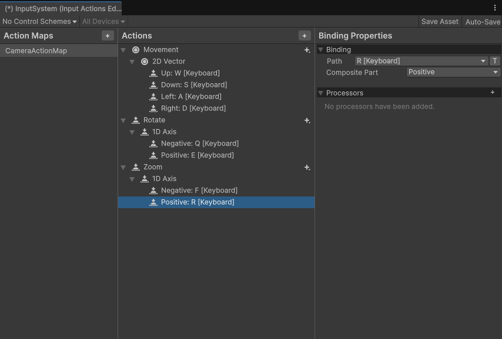
Creating zoom input actions
...
private InputAction zoomInputAction;
...
public void SetInputActions()
{
var cameraMap = inputAction.FindActionMap("CameraActionMap", true);
moveInputAction = cameraMap.FindAction("Movement", true);
moveInputAction.Enable();
rotateInputAction = cameraMap.FindAction("Rotate", true);
rotateInputAction.Enable();
zoomInputAction = cameraMap.FindAction("Zoom", true);
zoomInputAction.Enable();
}
...Now we can think about which variables we are interested in. Assuming that we are not interested in microscobic and telescobic scales, we probably define limits for upper and lower limits for zoom distance. For zoom lerp, we need current and target zoom levels, as well as speed. So we define our zoom related variables as:
...
[Header("Zoom Settings")]
private float minZoomMultiplier = .4f;
private float maxZoomMultiplier = 2.0f;
private float zoomStep = 0.2f;
private float currentZoomScale = 1.0f;
private float targetZoomScale = 1.0f;
private float zoomLerpSpeed = 10.0f;
...And finally we are going to introduce HandleZoom() function where the zooming input is actaully calculated and implemented. Maybe one important factor in here in which order we need to run our handling functions? For testing purposes, it does not matter. Afterwards we can check the common parameters that are changed by these functions, and which parameters affecting which function, then we can sort it out. So we set it like this:
void Update()
{
HandleZoom();
HandleRotation();
HandleMovement();
UpdateCamera();
}
...
void HandleZoom() { }
...As we have blueprint of zoom to take and process input, now we can implement the zooming function or behaviour. Firts lets test if we are being able to receive our inputs. I will just look at my HandleRotation() function and try to simulate the behaviour for safeguards.
void HandleZoom()
{
if (zoomInputAction == null) return;
if (zoomInputAction.WasPressedThisFrame())
{
float zoomDelta = zoomInputAction.ReadValue<float>();
Debug.Log(zoomDelta);
}
}When we press play, we got debug messages on console confirming that we am receiving my inputs when we press assigned R and F keys.
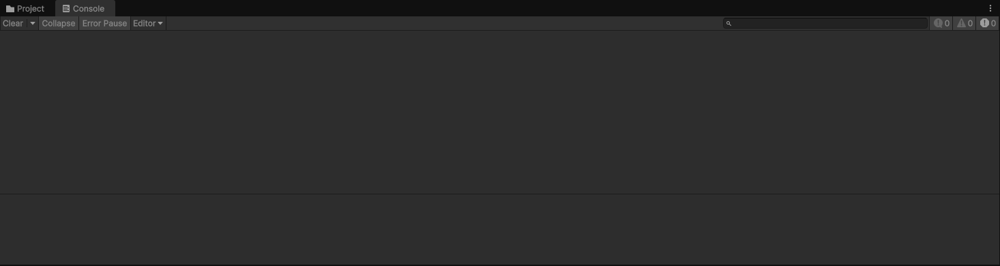
Lerp applied quantized step rotation
3.2. Implementing zoom function
We are concluded that inputs are working. We can now define the behaviour. As we zoom in, we can either get close with camera, or tweak the camera parameters. I will go with simple first option. By zoom, I am defining a behaviour that camera moving on the axis of camDistance within defined tolerance space.
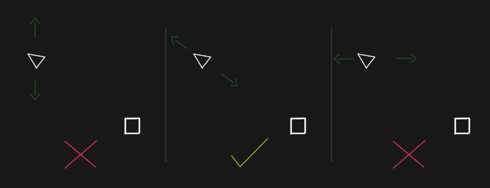
Expected zoom behaviour
And we can create fill out our HandleZoom()
...
void HandleZoom()
{
// safeguard
if (zoomInputAction == null) return;
// only react once per key scroll/press
if (zoomInputAction.WasPressedThisFrame())
{
float zoomDelta = zoomInputAction.ReadValue<float>();
targetZoomScale -= zoomDelta * zoomStep;
// we are clamping the value based on maximum and minimum limits that we have defined
targetZoomScale = Mathf.Clamp(targetZoomScale, minZoomMultiplier, maxZoomMultiplier);
}
// we will implement lerp as before, but lets start with step function due to its simplicity
currentZoomScale = targetZoomScale;
// we calculate new camera position
camPosition = camTarget - currentRotationQuaternion * baseCamDistance * currentZoomScale;
camDistance = camTarget - camPosition;
// we set actual camera and look at function as usual
cam.transform.position = camPosition;
cam.transform.LookAt(camTarget);
}
...Result of our step-zoom function:
Step zoom function
Now lets implement the lerp on our zoom function, so we simply replace where we assign currentZoomScale with lerping and we also add checkpoint to avoid float problems.
...
void HandleZoom()
{
...
// we are clamping the value based on maximum and minimum limits that we have defined
targetZoomScale = Mathf.Clamp(targetZoomScale, minZoomMultiplier, maxZoomMultiplier);
}
// smoothly interpolate actual zoom
currentZoomScale = Mathf.Lerp(currentZoomScale, targetZoomScale, zoomLerpSpeed * Time.deltaTime);
//if no visible change, skip
if (Mathf.Abs(currentZoomScale - targetZoomScale) < 0.02f)
{
currentZoomScale = targetZoomScale;
return;
}
...
}
...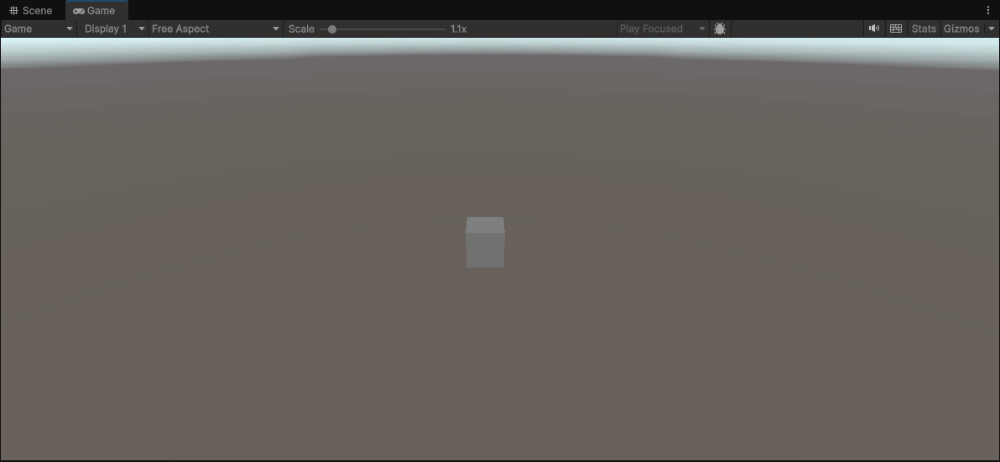
Zoom function with linear interpolation applied
3.3. Transcribing UpdateCamera function
As we do in previous section, we want to ensure coherence between translations and avoid repetition so we move HandleZoom() logic partially to UpdateCamera(). We will determine the repetitive part, as well as what is unique about HandleZoom(). First we cut the repetitive part from HandleZoom()
void HandleZoom()
{
// safeguard
if (zoomInputAction == null) return;
// only react once per key scroll/press
if (zoomInputAction.WasPressedThisFrame())
{
float zoomDelta = zoomInputAction.ReadValue<float>();
targetZoomScale -= zoomDelta * zoomStep;
targetZoomScale = Mathf.Clamp(targetZoomScale, minZoomMultiplier, maxZoomMultiplier);
}
// smoothly interpolate actual zoom
currentZoomScale = Mathf.Lerp(currentZoomScale, targetZoomScale, zoomLerpSpeed * Time.deltaTime);
//if no visible change, skip
if (Mathf.Abs(currentZoomScale - targetZoomScale) < 0.02f)
{
currentZoomScale = targetZoomScale;
return;
}
...
// we trim out the rest as calculations will be handled in UpdateCamera
// only thing we set here is the currentZoomFactor.
}About update, the transform position is handled at end, so we cam remove last two lines. However, the position part looks pretty similar to rotation. While we use baseCamDistance to calculate, we need both zoom scale and rotation degree as parameters. So I will add my test on simply first if block. So the final version of our UpdateCamera() look like this.
private void UpdateCamera()
{
// change camera variables if there is rotation or zoom
if (currentUpRotationInDeg != targetUpRotationInDeg || currentZoomScale != targetZoomScale)
{
currentRotationQuaternion = Quaternion.Euler(0, currentUpRotationInDeg, 0);
camPosition = camTarget - currentRotationQuaternion * baseCamDistance * currentZoomScale;
}
// change camera variable if there is movement
if (planarMoveVector.magnitude > 0.02f)
{
camTarget += planarMoveVector;
camPosition += planarMoveVector;
planarMoveVector = Vector3.zero;
}
// apply changes if there is change in camera position
if (cam.transform.position != camPosition)
{
camDistance = camTarget - camPosition;
cam.transform.position = camPosition;
cam.transform.LookAt(camTarget);
}
}Though this step we finally conclude and implemented all of our translation functions for pseudo-isometric camera and in its ready to go state!.
Movement, rotation, zoom all together
If you are lost or could not reach the same results: here the final code for your comparison PseudoIsometricCamera.cs
Bonus step: Test scene
I have cureated a small cc0 asset collection of cc0. To test out some of the graphics programming aspects. You you want to have the same scene as in the initial visual you can download or submodule this repo.
Shortly, I added as a submodule. On the root of my project I open terminal:
project_root
git submodule add https://github.com/kutaycoskuner/yurt.git Assets/Assets/yurtThen I simply drag drop obj version of outliner-testscene to my scene. Next, I select my camera
On the inspector > camera > environment > background type: Solid Color (from skybox) Now we should be able to see only a solid color on our background. I have set it #181818.
Following the tutorial and the development experience is not always the same, it is pretty normal to encounter bugs, and problems. Although that I attempted to provide more, real-experience format rather than polished end result, it still shows some level of clarity. However, real problem solving coming from encountering problems, understanding and solving them. Expecting a linear progression is little bit overoptimistic, do not afraid of the process and solving problems!
As it is my second and most comprehensive attempt of tutorial, I would be happy to hear about your feedback about the pace, style and if would you be interested in such content. Thank you for your time!
References
[1] de Vries, Joey. Camera. n.d. Accessed (25 Nov 2025) https://learnopengl.com/Getting-started/Camera
[2] “Giving Personality to Procedural Animations using Math” [Video File]. Uploaded by t3ssel8r, Youtube. 2022. Accessed (23 Nov 2025) https://www.youtube.com/watch?v=KPoeNZZ6H4s
[3] Quilez, Inigo. Graphtoy. 2010. Accessed (23 Nov 2025) https://graphtoy.com/
[4] Sanderson, Grant. “Linear transformations and matrices | Chapter 3, Essence of linear algebra” [Video File]. Uploaded by 3Blue1Brown, Youtube. 2016. Accessed (23 Nov 2025) https://www.youtube.com/watch?v=kYB8IZa5AuE
[5] Santell, Jordan. 3D Projection. 2019. Accessed (25 Nov 2025) https://jsantell.com/3d-projection/
[6] “Transform.LookAt”. In Unity Documentation. 2025. Accessed (25 Nov 2025) https://docs.unity3d.com/6000.0/Documentation/ScriptReference/Transform.LookAt.html